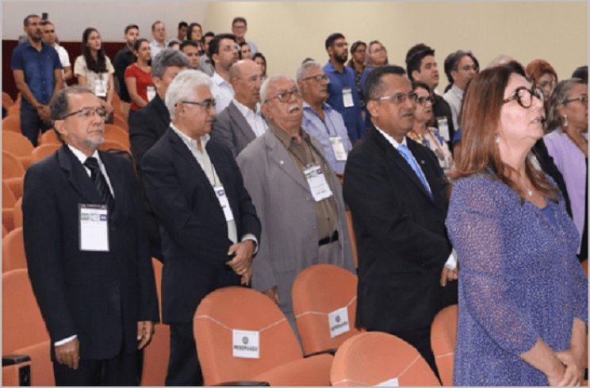

27.08.2009 | Ouvidoria Profissionais da contabilidade de Natal discutem sobre a importância do Controle Social no estado
"Cerca de 130 pessoas participaram, na manhã desta quarta-feira (21), da 14ª edição do projeto Abraçando o Controle Social, no auditório do Tribunal de Contas do Estado do Rio Grande do Norte, em Natal (RN). O evento teve o objetivo de debater a importância do controle social para a melhoria de gestão pública e avaliar a qualidade dos serviços que são prestados à população. A vice-presidente de Controle Interno do CFC, Lucilene Florêncio Viana, representou o presidente do CFC, Zulmir Ivânio Breda.
Para saudar os participantes do evento, o presidente do Conselho Regional de Contabilidade do Rio Grande do Norte (CRCRN), Luzenilson Moreira da Silva, foi o primeiro a discursar. Para ele, o profissional da contabilidade do estado norte-rio-grandense é essencial para contribuir com o controle social. “A nossa aproximação com a administração pública fortalece a disseminação de uma cultura de prevenção à corrupção” destacou o presidente.
Segundo dados, a área de Registro do CRCRN, há mais de 6.300 profissionais em plena atividade. “Faço um chamamento à classe contábil do Rio Grande do Norte para levarmos as boas práticas de controle de gestão pública, métodos e técnicas que visem ao aperfeiçoamento do sistema de transparência e fiscalização”, disse Luzenilson.
A vice-presidente de Controle Interno do CFC, Lucilene Florêncio Viana, por sua vez, reforçou o comprometimento da classe com o projeto. “Precisamos nos conscientizar, ainda mais, sobre a importância do funcionamento dos mecanismos de controle (interno, externo e social ) para o desenvolvimento sustentável do país”, esclarece.
O Abraçando, que já percorreu 14 estados brasileiros, solicita o engajamento dos profissionais de contabilidade e da sociedade civil para que acompanhe a correta aplicação do dinheiro público. “Esse projeto foi um grande acerto, porque é por meio da contabilidade que podemos ajudar, e muito, no desenvolvimento e crescimento do país”, conclui Lucilene.